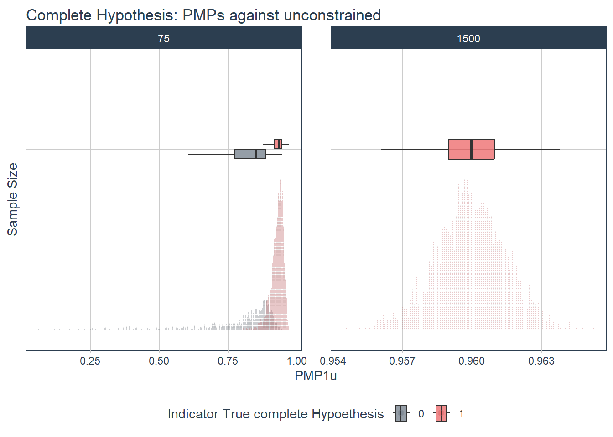
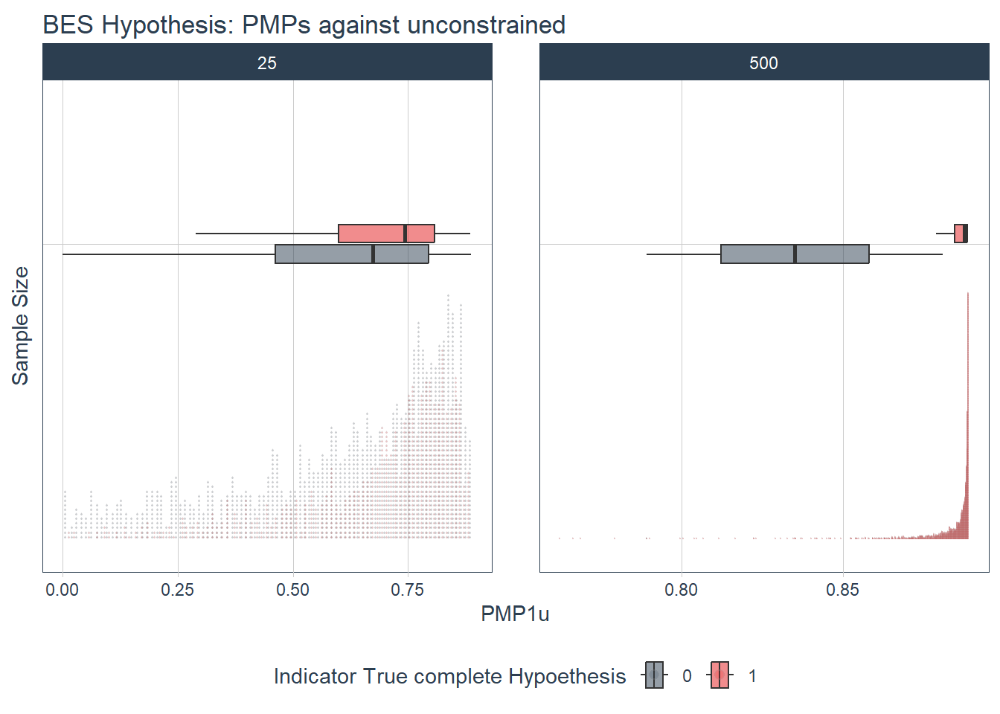
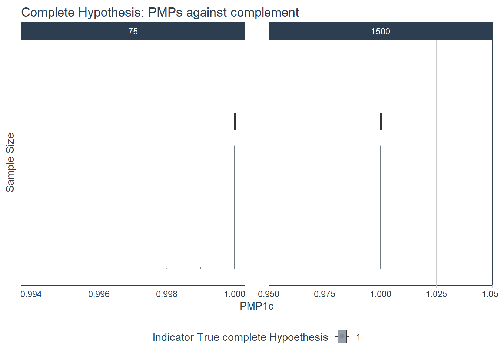
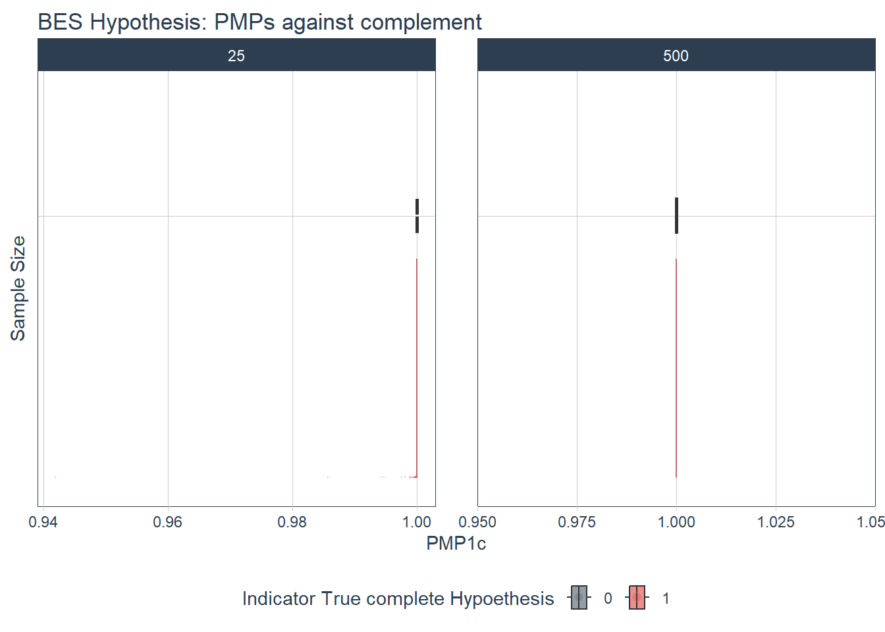
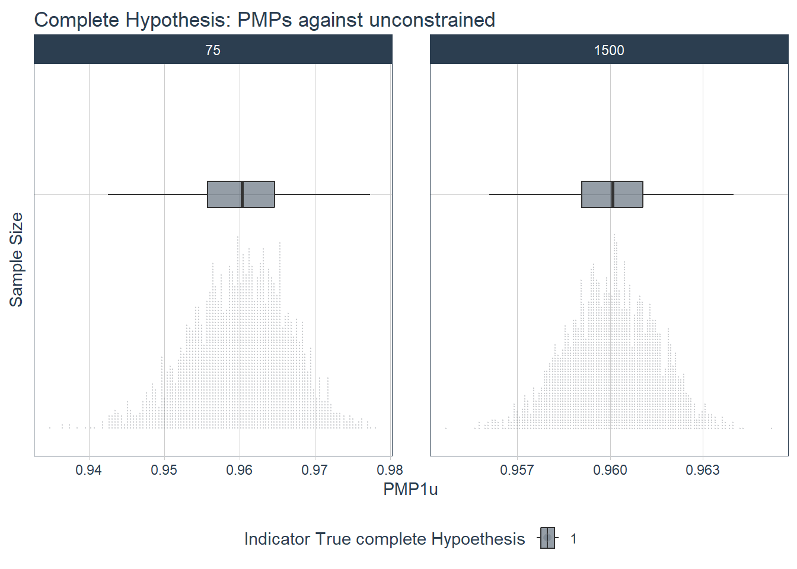
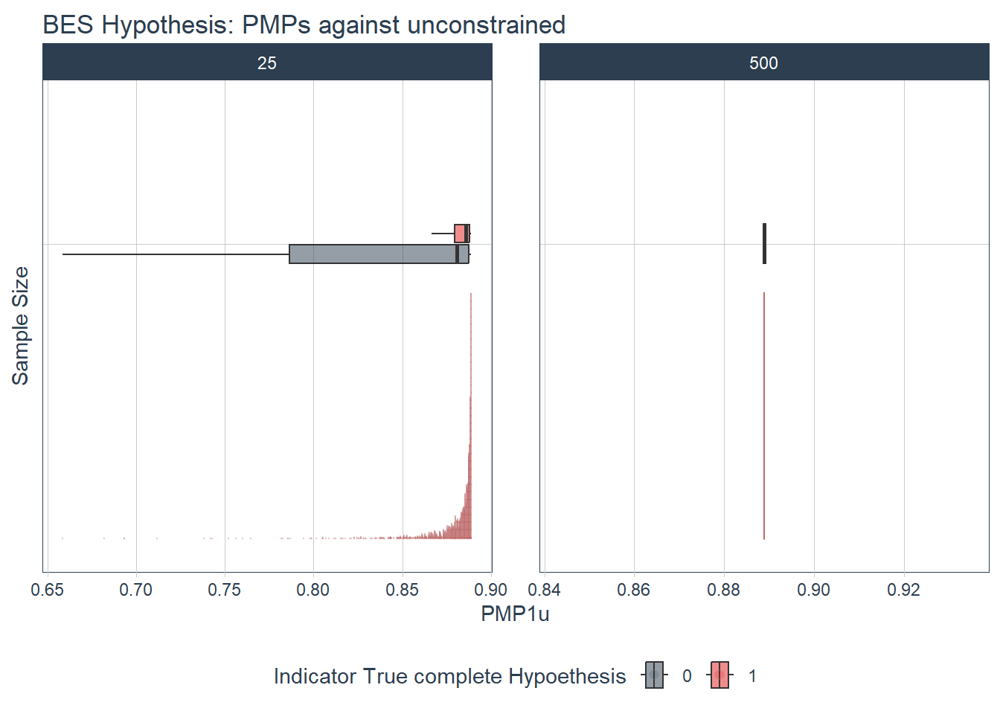
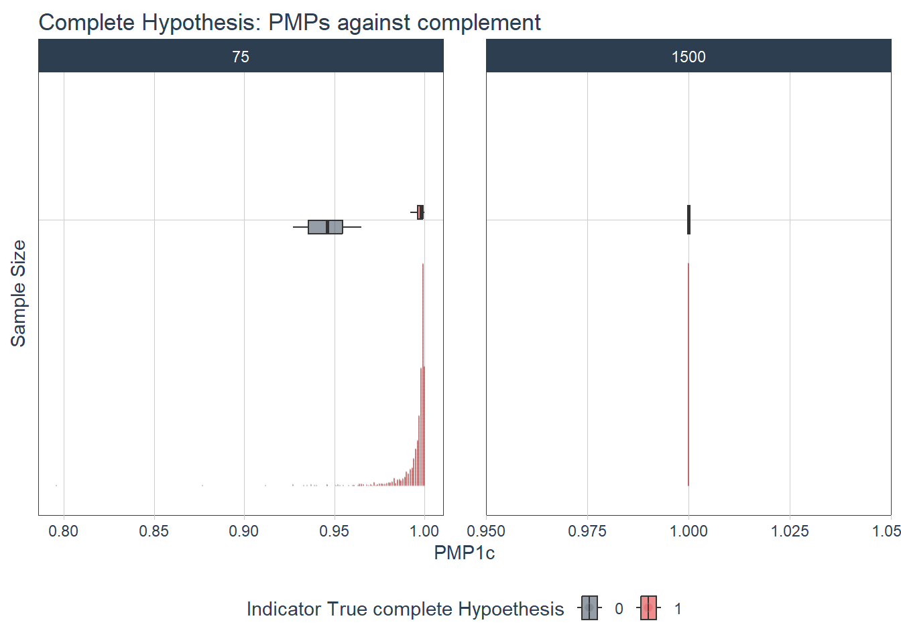

nsim_low <- data_BES_part_low %>%filter(ind ==1& n_sample ==25) %>%pull(nsim)# export all obs in c 0, d 0.2 nsample 25 and ind 1data_low_part_02_25 <- data %>%filter(c ==0& d ==0.2& n_sample ==25& nsim %in% nsim_low)filtered_data <- data_low_part_02_25 %>%group_by(c, d, nsim) %>%filter(all(ind ==1)) %>%ungroup()# never all ind == 1
likely that BES < 0.5 only happens in cases where at least 1 partial is not true -> make ind more specific, also for partial hypotheses, so we can see exactly
data_low_part_02_25[7,]
# A tibble: 1 × 16
nsim n_sample study d c H_comp H_part BF1u_comp PMP1c_comp BF1u_part
<int> <dbl> <int> <dbl> <dbl> <chr> <chr> <dbl> <dbl> <dbl>
1 251 25 1 0.2 0 mu_s >… mu_s … 3.78 0.817 0.539
# ℹ 6 more variables: PMP1c_part <dbl>, ind <dbl>, PMP1u_comp <dbl>,
# PMP1u_part <dbl>, BES_PMP1c_part <dbl>, BES_PMP1u_part <dbl>
unconstrained
# unconstraineddata %>%filter(study ==3, n_sample %in%c(75, 1500) & c ==0& d ==0.2) %>%ggplot(aes(y =factor(n_sample), x = PMP1u_comp, fill =factor(ind))) +geom_boxplot(width =0.12,# removing outliersoutlier.color =NA,alpha =0.5 ) +stat_dots(# ploting on left sideside ="right",# adjusting positionjustification =1.2,# adjust grouping (binning) of observations#binwidth = 0.25alpha =0.2 ) +# Themes and Labelsscale_fill_tq() +theme_tq() +labs(title ="Complete Hypothesis: PMPs against unconstrained",x ="PMP1u",y ="Sample Size",fill ="Indicator True complete Hypoethesis" ) +facet_wrap(~ n_sample, scales ="free") +theme(axis.ticks.y =element_blank(), axis.text.y =element_blank())

data %>%filter(study ==3, n_sample %in%c(25, 500) & c ==0& d ==0.2) %>%ggplot(aes(y =factor(n_sample), x = BES_PMP1u_part, fill =factor(ind))) +geom_boxplot(width =0.15,# removing outliersoutlier.color =NA,alpha =0.5 ) +stat_dots(# ploting on left sideside ="right",# adjusting positionjustification =1.2,# adjust grouping (binning) of observations#binwidth = 0.25alpha =0.2 ) +# Themes and Labelsscale_fill_tq() +theme_tq() +labs(title ="BES Hypothesis: PMPs against unconstrained",x ="PMP1u",y ="Sample Size",fill ="Indicator True complete Hypoethesis" ) +facet_wrap(~ n_sample, scales ="free") +theme(axis.ticks.y =element_blank(), axis.text.y =element_blank())

In the BES we can see some red <0.5
data_BES_part_low_u <- data %>%filter(study ==3& c ==0& d ==0.2& n_sample %in%c(25, 500) & BES_PMP1u_part <=0.5)data_BES_part_low_u %>%filter(ind ==1& n_sample ==500) # empty -> happens only in low samples
# A tibble: 0 × 16
# ℹ 16 variables: nsim <int>, n_sample <dbl>, study <int>, d <dbl>, c <dbl>,
# H_comp <chr>, H_part <chr>, BF1u_comp <dbl>, PMP1c_comp <dbl>,
# BF1u_part <dbl>, PMP1c_part <dbl>, ind <dbl>, PMP1u_comp <dbl>,
# PMP1u_part <dbl>, BES_PMP1c_part <dbl>, BES_PMP1u_part <dbl>
nsim_low_u <- data_BES_part_low_u %>%filter(ind ==1& n_sample ==25) %>%pull(nsim)# export all obs in c 0, d 0.2 nsample 25 and ind 1data_low_part_02_25_u <- data %>%filter(c ==0& d ==0.2& n_sample ==25& nsim %in% nsim_low_u)filtered_data_u <- data_low_part_02_25_u %>%group_by(c, d, nsim) %>%filter(all(ind ==1)) %>%ungroup()# never all ind == 1
conclusion:
length(nsim_low)
[1] 65
length(nsim_low_u)
[1] 148
happens more often in the unconstrained scenario, only happens when at least one ind == 0, happens in the uncorrelated scenario (but only rarely)
look at higher effect size
#complementdata %>%filter(study ==3, n_sample %in%c(75, 1500) & c ==0& d ==0.8) %>%ggplot(aes(y =factor(n_sample), x = PMP1c_comp, fill =factor(ind))) +geom_boxplot(width =0.12,# removing outliersoutlier.color =NA,alpha =0.5 ) +stat_dots(# ploting on left sideside ="right",# adjusting positionjustification =1.2,# adjust grouping (binning) of observations#binwidth = 0.25alpha =0.2 ) +# Themes and Labelsscale_fill_tq() +theme_tq() +labs(title ="Complete Hypothesis: PMPs against complement",x ="PMP1c",y ="Sample Size",fill ="Indicator True complete Hypoethesis" ) +facet_wrap(~ n_sample, scales ="free") +theme(axis.ticks.y =element_blank(), axis.text.y =element_blank())

data %>%filter(study ==3, n_sample %in%c(25, 500) & c ==0& d ==0.8) %>%ggplot(aes(y =factor(n_sample), x = BES_PMP1c_part, fill =factor(ind))) +geom_boxplot(width =0.15,# removing outliersoutlier.color =NA,alpha =0.5 ) +stat_dots(# ploting on left sideside ="right",# adjusting positionjustification =1.2,# adjust grouping (binning) of observations#binwidth = 0.25alpha =0.2 ) +# Themes and Labelsscale_fill_tq() +theme_tq() +labs(title ="BES Hypothesis: PMPs against complement",x ="PMP1c",y ="Sample Size",fill ="Indicator True complete Hypoethesis" ) +facet_wrap(~ n_sample, scales ="free") +theme(axis.ticks.y =element_blank(), axis.text.y =element_blank())

# unconstraineddata %>%filter(study ==3, n_sample %in%c(75, 1500) & c ==0& d ==0.8) %>%ggplot(aes(y =factor(n_sample), x = PMP1u_comp, fill =factor(ind))) +geom_boxplot(width =0.12,# removing outliersoutlier.color =NA,alpha =0.5 ) +stat_dots(# ploting on left sideside ="right",# adjusting positionjustification =1.2,# adjust grouping (binning) of observations#binwidth = 0.25alpha =0.2 ) +# Themes and Labelsscale_fill_tq() +theme_tq() +labs(title ="Complete Hypothesis: PMPs against unconstrained",x ="PMP1u",y ="Sample Size",fill ="Indicator True complete Hypoethesis" ) +facet_wrap(~ n_sample, scales ="free") +theme(axis.ticks.y =element_blank(), axis.text.y =element_blank())

data %>%filter(study ==3, n_sample %in%c(25, 500) & c ==0& d ==0.8) %>%ggplot(aes(y =factor(n_sample), x = BES_PMP1u_part, fill =factor(ind))) +geom_boxplot(width =0.15,# removing outliersoutlier.color =NA,alpha =0.5 ) +stat_dots(# ploting on left sideside ="right",# adjusting positionjustification =1.2,# adjust grouping (binning) of observations#binwidth = 0.25alpha =0.2 ) +# Themes and Labelsscale_fill_tq() +theme_tq() +labs(title ="BES Hypothesis: PMPs against unconstrained",x ="PMP1u",y ="Sample Size",fill ="Indicator True complete Hypoethesis" ) +facet_wrap(~ n_sample, scales ="free") +theme(axis.ticks.y =element_blank(), axis.text.y =element_blank())

only happens in low effect sizes
look at correlated data
Complement
#complementdata %>%filter(study ==3, n_sample %in%c(75, 1500) & c ==0.8& d ==0.2) %>%ggplot(aes(y =factor(n_sample), x = PMP1c_comp, fill =factor(ind))) +geom_boxplot(width =0.12,# removing outliersoutlier.color =NA,alpha =0.5 ) +stat_dots(# ploting on left sideside ="right",# adjusting positionjustification =1.2,# adjust grouping (binning) of observations#binwidth = 0.25alpha =0.2 ) +# Themes and Labelsscale_fill_tq() +theme_tq() +labs(title ="Complete Hypothesis: PMPs against complement",x ="PMP1c",y ="Sample Size",fill ="Indicator True complete Hypoethesis" ) +facet_wrap(~ n_sample, scales ="free") +theme(axis.ticks.y =element_blank(), axis.text.y =element_blank())

data %>%filter(study ==3, n_sample %in%c(25, 500) & c ==0.8& d ==0.2) %>%ggplot(aes(y =factor(n_sample), x = BES_PMP1c_part, fill =factor(ind))) +geom_boxplot(width =0.15,# removing outliersoutlier.color =NA,alpha =0.5 ) +stat_dots(# ploting on left sideside ="right",# adjusting positionjustification =1.2,# adjust grouping (binning) of observations#binwidth = 0.25alpha =0.2 ) +# Themes and Labelsscale_fill_tq() +theme_tq() +labs(title ="BES Hypothesis: PMPs against complement",x ="PMP1c",y ="Sample Size",fill ="Indicator True complete Hypoethesis" ) +facet_wrap(~ n_sample, scales ="free") +theme(axis.ticks.y =element_blank(), axis.text.y =element_blank())
In the BES we can see some red <0.5
data_BES_part_low <- data %>%filter(study ==3& c ==0.8& d ==0.2& n_sample %in%c(25, 500) & BES_PMP1c_part <=0.5)data_BES_part_low %>%filter(ind ==1& n_sample ==500) # empty -> happens only in low samples
# A tibble: 0 × 16
# ℹ 16 variables: nsim <int>, n_sample <dbl>, study <int>, d <dbl>, c <dbl>,
# H_comp <chr>, H_part <chr>, BF1u_comp <dbl>, PMP1c_comp <dbl>,
# BF1u_part <dbl>, PMP1c_part <dbl>, ind <dbl>, PMP1u_comp <dbl>,
# PMP1u_part <dbl>, BES_PMP1c_part <dbl>, BES_PMP1u_part <dbl>
nsim_low <- data_BES_part_low %>%filter(ind ==1& n_sample ==25) %>%pull(nsim) # 5 nsims# export all obs in c 0, d 0.2 nsample 25 and ind 1data_low_part_82_25 <- data %>%filter(c ==0.8& d ==0.2& n_sample ==25& nsim %in% nsim_low)filtered_data <- data_low_part_82_25 %>%group_by(c, d, nsim) %>%filter(all(ind ==1)) %>%ungroup()# never all ind == 1
likely that BES < 0.5 only happens in cases where at least 1 partial is not true -> make ind more specific, also for partial hypotheses, so we can see exactly
nsim_low_u <- data_BES_part_low_u %>%filter(ind ==1& n_sample ==25) %>%pull(nsim)# export all obs in c 0, d 0.2 nsample 25 and ind 1data_low_part_02_25_u <- data %>%filter(c ==0.8& d ==0.2& n_sample ==25& nsim %in% nsim_low_u)filtered_data_u <- data_low_part_02_25_u %>%group_by(c, d, nsim) %>%filter(all(ind ==1)) %>%ungroup()# never all ind == 1
conclusion:
length(nsim_low)
[1] 5
length(nsim_low_u)
[1] 27
again, happens more often in the unconstrained scenario, only happens when at least one ind == 0, happens in the uncorrelated scenario (but only rarely)
happens less often with correlated data -> we can assume that it comes from the randomness?